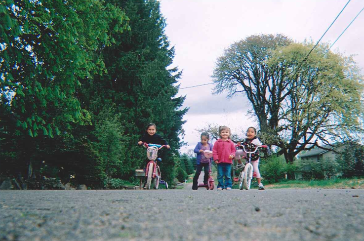

In Spring of 2013, 21 latina women in Washington County documented their neighborhood walking environments. Select points on the map to see their stories.
Brought to you by Adalente Mujeres & Oregon Walks.
Photovoice on Foot

In Spring of 2013, 21 latina women in Washington County documented their neighborhood walking environments. Select points on the map to see their stories.
Brought to you by Adalente Mujeres & Oregon Walks.